Part B · Concepts
How Lite Land works
Lite Land reads a drone image the way a person does. It splits the scene into objects, describes each object with 19 measurements (23 with a DSM), and learns from your examples which descriptions belong to which class.
5.1Objects, not pixels
Object-based image analysis classifies groups of similar neighbouring pixels instead of single pixels. A group carries far more evidence than a pixel: its average colour, how varied it is inside, its texture, its shape, its height and how it compares with its neighbours. It also removes the scattered single-pixel speckle that pixel-by-pixel maps suffer from.
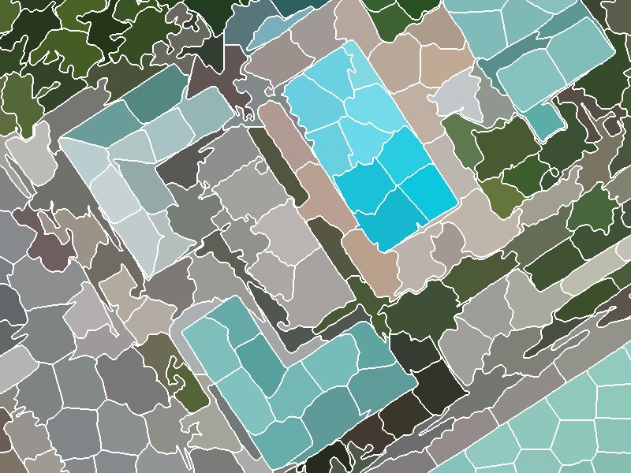
At drone resolution a tree crown or roof spans hundreds of pixels, so objects match real things on the ground. Resolution can also be too fine. Below roughly 1–5 cm per pixel the segmenter starts outlining individual leaves and branches, and objects stop meaning anything. About 5–10 cm per pixel suits crown- and gap-scale work. The sample is captured at 8 cm and processed at 10 cm.
RGB only. Consumer drone cameras record red, green and blue, with no near-infrared. That rules out NDVI, so Lite Land leans on visible-light vegetation indices, texture and height instead.
5.2Segmentation with SLIC
SLIC (Simple Linear Iterative Clustering) is k-means clustering on five numbers per pixel: three colour values in CIELAB space (L*, a*, b*) and the pixel's x and y. Seeds start on a regular grid. Each pixel then joins the nearest seed, where "near" mixes colour and distance:
D = √( dcolour² + (dspace / S)² · m² )
S is the seed spacing and m is compactness. CIELAB is used because distances in it track how different two colours look to a person. After about ten rounds of moving seeds and reassigning pixels, a clean-up pass makes every segment a single connected piece.
Number of segments: the scale of the map
This one setting decides how big objects are, and it is the most important choice in OBIA. Too many, and crowns and roofs are cut into fragments (more labelling, but edges are kept). Too few, and objects straddle two cover types, which no classifier can fix.
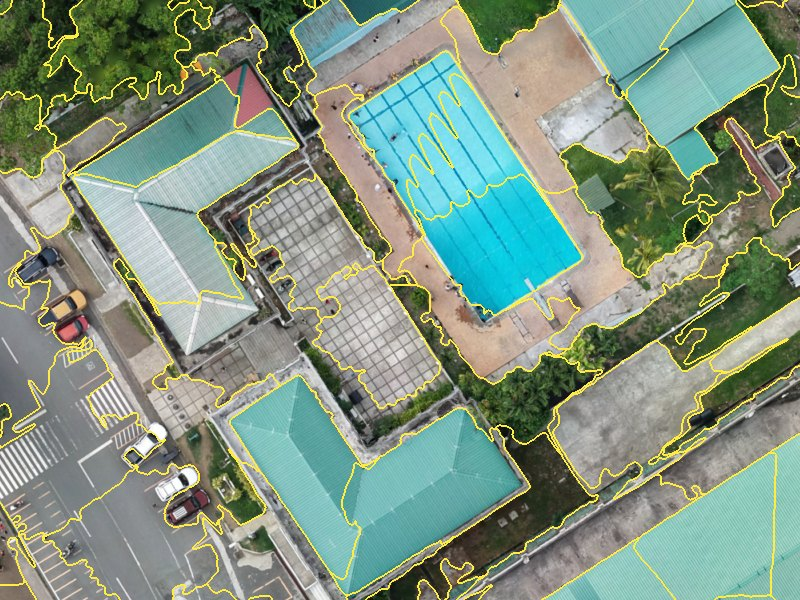
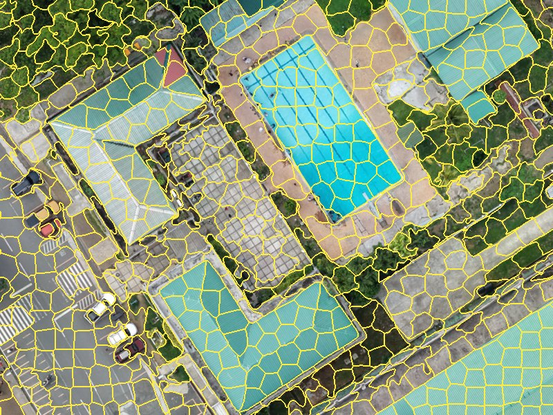
Compactness and sigma
Compactness trades colour against regularity: low values let segments follow colour edges closely; high values make them blocky and even. Sigma blurs the image slightly before clustering so that fine texture and sensor noise do not seed spurious segments.
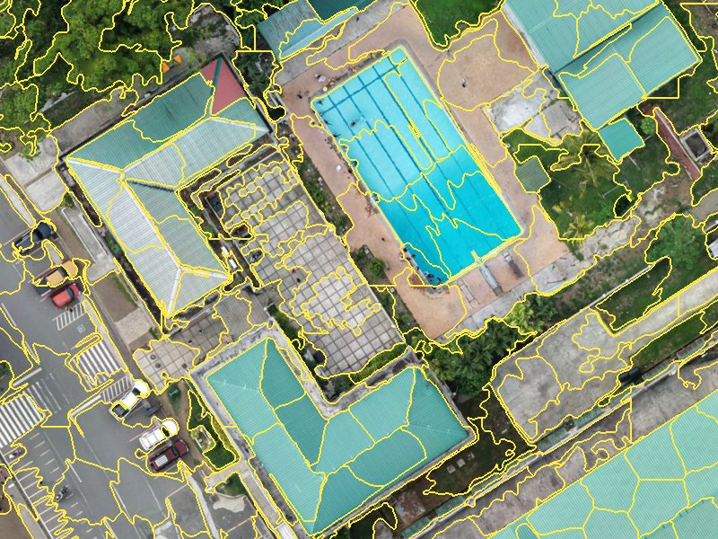
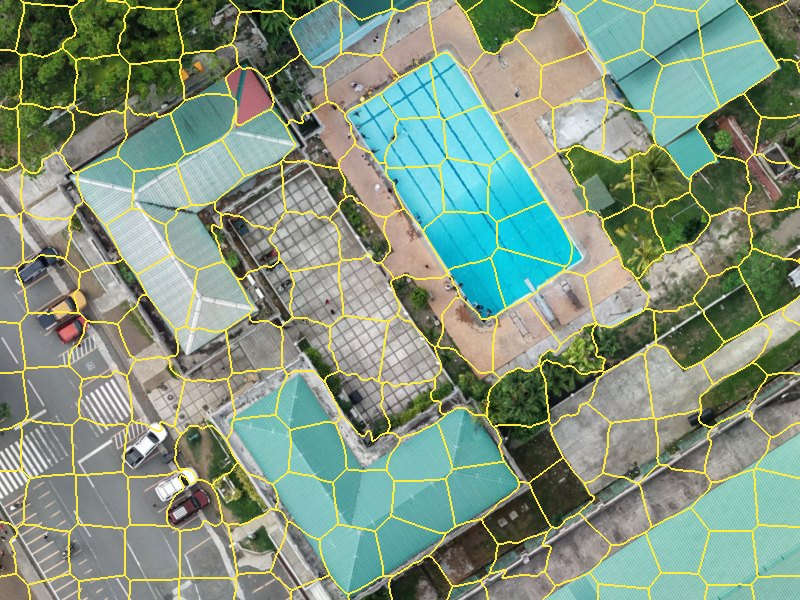
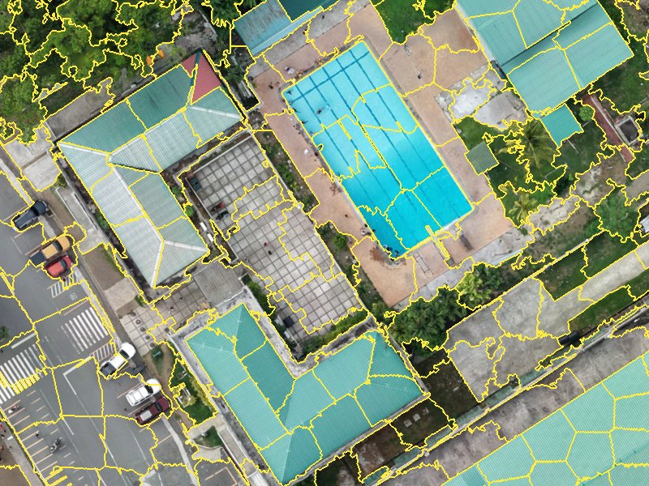
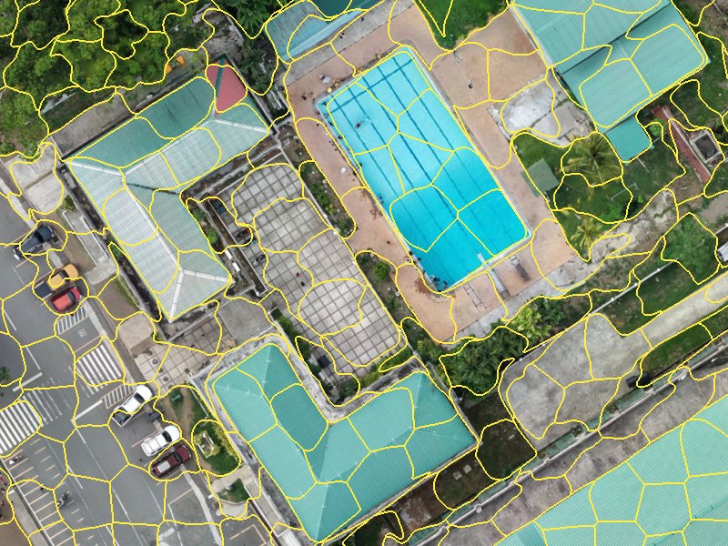
All four use 8,000 segments; compare with the 8,000 panel above (compactness 0.15, sigma 2.5).
GPU and CPU give slightly different segments
The CPU engine is scikit-image's standard SLIC, which searches only a window around each seed. The GPU engine is a PyTorch version that does the same clustering on the graphics card. The two treat compactness on different numeric scales, so the same slider value gives similar but not identical segments. On the sample, 8,000 requested segments gave on GPU and on CPU. Pick one engine for a project and keep it.
5.3The object fingerprint
Once segmented, every object is summarised by a fixed list of numbers. These numbers, not the image, are what the classifier learns from. Nineteen come from the RGB image alone; a DSM adds four more.
All 23 features
| Group | Feature | What it measures | Helps separate |
|---|---|---|---|
| Colour | r_mean g_mean b_mean | Average of each band | Overall colour; dark shade and gaps |
r_std g_std b_std | Spread of each band inside the object | Ragged crown vs. lawn or roof | |
brightness_mean | Average of (R+G+B)/3 | Sunlit vs. shaded surfaces | |
| Vegetation index | exg_mean | Excess Green, 2g − r − b | Plants vs. soil, roads, roofs |
vari_mean | (G − R) / (G + R − B) | Green cover, damped for light | |
ngrdi_mean | (G − R) / (G + R) | Greenness, NDVI stand-in | |
| Texture (GLCM) | contrast | Grey-level difference between neighbours | Canopy vs. smooth roof |
homogeneity | Closeness of neighbouring grey levels | Uniform surfaces | |
energy | Orderliness (angular second moment) | Repetitive surfaces | |
entropy | Disorder of the texture | Complex canopy | |
| Shape | area perimeter | Size of the outline, m² and m | Object size |
circularity | 4πA / P²; 1 is a disc | Compact vs. long objects | |
convexity | Area / convex-hull area | Regular vs. ragged outlines | |
| Context | brightness_rel_neighbors | Own brightness minus touching objects' mean | Locally dark patches, gaps |
| Height (DSM) | dsm_mean dsm_std | Mean height and its spread | Tall vs. low; rough canopy |
slope_mean | Mean slope in degrees | Tilted roofs and crown sides vs. flat ground | |
dsm_rel_neighbors | Own mean height minus touching objects' mean | Raised objects (crowns, roofs) vs. sunken (gaps, roads) |
The three vegetation indices use chromatic coordinates, each band divided by R + G + B, so that a shaded leaf and a sunlit leaf score alike.
Feature explorer
Pick a feature to see its value for every object in one 128 × 96 m patch of the sample. The patch holds all five classes: trees on the left and centre, the sports field top right, roads, roofs bottom left and earthworks bottom right.
Colour ramps are stretched to the 2nd–98th percentile of objects in this patch. The neighbour features use a blue–red ramp centred on zero.
Texture, step by step
Texture comes from a grey-level co-occurrence matrix (GLCM). The object is turned to grey, reduced to 15 grey levels, and every pair of touching pixels is tallied by its two levels, in four directions. A smooth surface puts all its pairs on the diagonal (same level next to same level). A busy one scatters them.
A canopy object
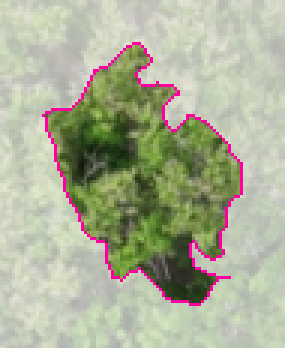
Co-occurrence: spread wide
A roof object
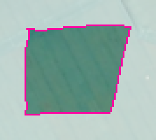
Co-occurrence: one cell
Teal and green roofs can look close to canopy in mean colour. Texture separates them at once: the canopy's contrast is hundreds of times the roof's. Objects smaller than 16 pixels get neutral texture values.
Exactly how Lite Land computes texture
Luminance is 0.299R + 0.587G + 0.114B. Grey levels 1–15 hold the object's pixels; level 0 marks pixels outside the object and is dropped, then the matrix is renormalised so only pairs inside the object count. Pairs are one pixel apart at 0°, 45°, 90° and 135°, counted symmetrically. Contrast, homogeneity and energy are averaged over the four directions. Entropy is computed in bits and summed over the four directions, so its values run about four times a single-direction entropy; the classifier is unaffected by that scale.
Context and height
Two features compare each object with the objects it touches, using a region adjacency graph (a list of which objects share a border). An object darker and lower than everything around it is a canopy-gap candidate wherever it sits on a slope. That matters on hilly ground, where a hilltop gap can be higher than valley-floor canopy, and where no bare-earth terrain model exists to subtract.
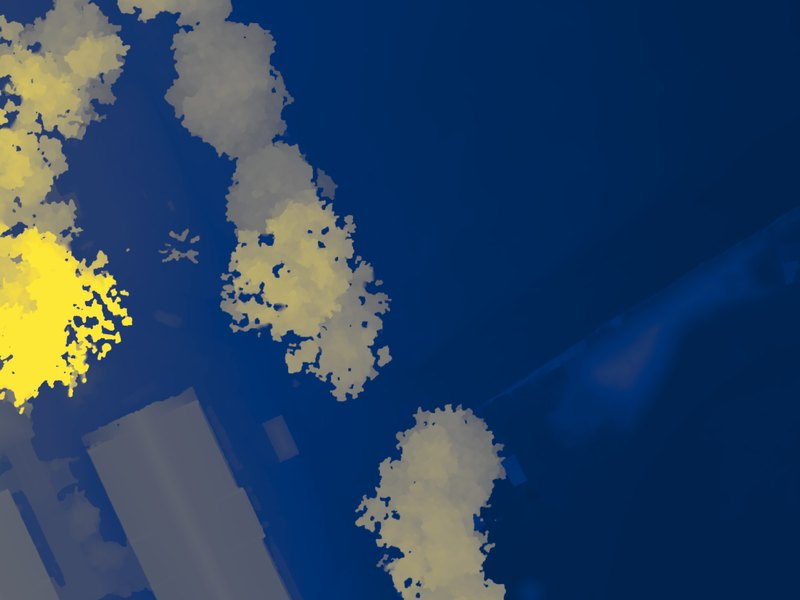
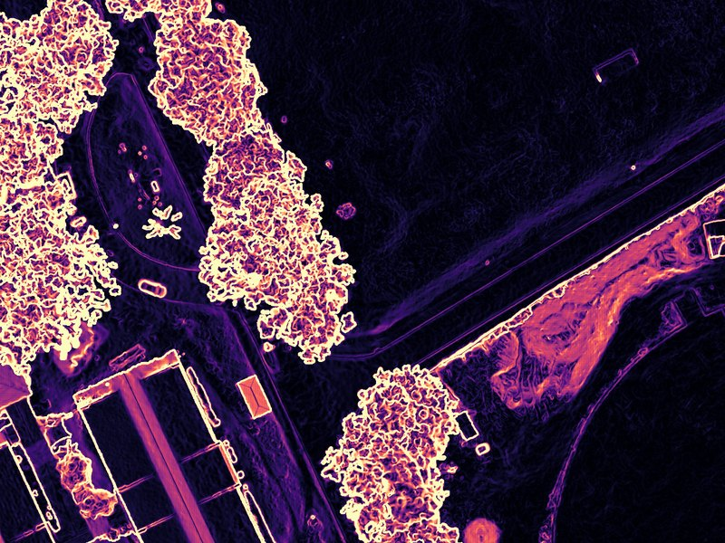
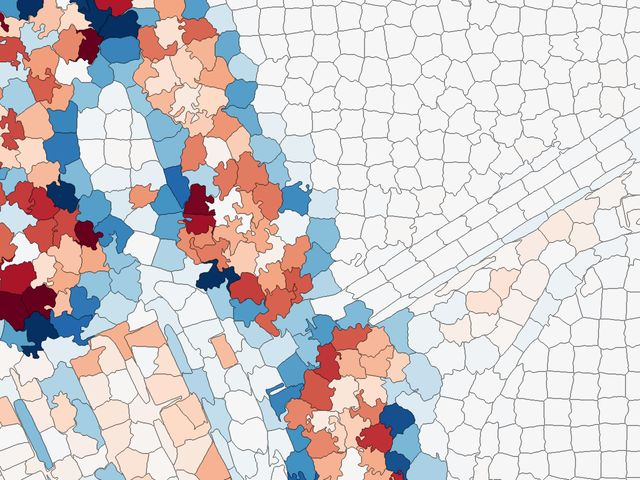
Random Forest needs no rescaling of these features, so they go in as measured. The grow-selection tool on Tab 2 compares objects by distance, so it first divides each feature by its spread across the scene.
5.4Random Forest
You label a modest number of example objects per class. Lite Land trains a Random Forest of 100 decision trees on their feature lists and asks it to label every object in the scene.
Why this and not hand-written rules such as "brightness below 50 means gap"? Rules are clear but brittle: a change in light breaks them, and they do not scale to 23 features and five classes. A Random Forest learns the combinations for you. Training each tree on a random resample of your examples, with a random subset of features at each split, keeps it from memorising noise.
5.5Why retraining matters
The first model rarely gets every class right. It mislabels objects unlike anything in your first examples. Every classification run shows you exactly where those errors are, and retraining fixes them: add the misclassified objects as samples under their correct class, train again, classify again. Repeating this removes most of the misclassified objects you can see.
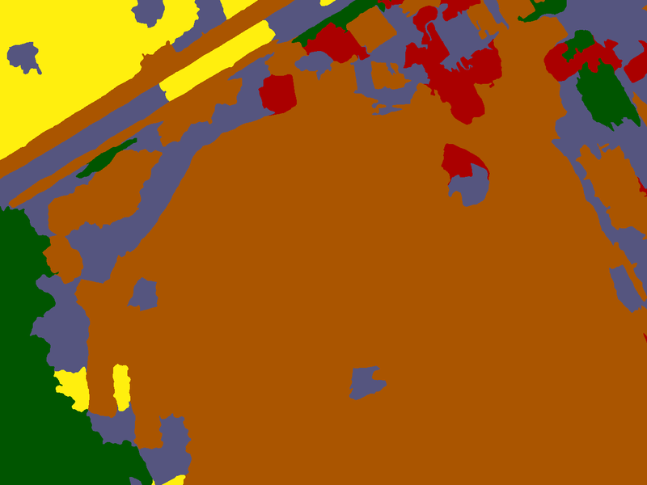
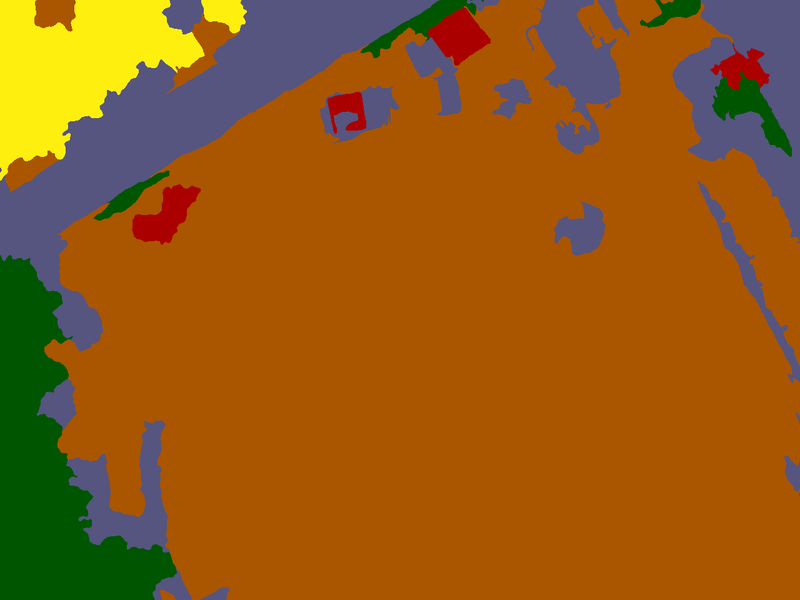
Drag across the image. A first model trained on five objects per class scatters Building and Impervious across the earthworks and field edge; the final model keeps them Bare.
Simulated from the sample session · not a recorded history
The sample session keeps only its final training set, not the order it was built in. To show how accuracy grows round by round, we replayed the retraining loop from those real labels. Round 1 trains on randomly chosen objects per class. Each later round adds up to objects per class that the current model gets wrong, drawn from the session's own 340 labelled objects, which is what you do after inspecting a run. Every round is scored against the session's 100 reference points. The replay was repeated from different random starts.
Overall accuracy by retraining round
Mean of replays (line) and their range (bars). Share of the 100 reference points the map labels correctly.
Show as table
| Round | Training objects (mean) | Overall accuracy (mean) | Range |
|---|
The first rounds matter most. Accuracy climbs from on 25 objects to by round 3, then levels off near . Later rounds still add samples, but each fixes less.
Targeted samples beat sheer numbers. The replays reach the final model's with about objects, chosen because the model got them wrong. The session's full set of objects scores no higher. Objects the model already gets right add little.
Start-up luck fades. In round 1 the replays range from to , depending on which five objects per class happened to be picked. By the last rounds every replay sits within a few points of the others.
Producer's accuracy per class, first model and final model
Share of each class's 20 reference points the map got right. Round 1 is the mean of the replays.
Impervious gains the most: a five-object start cannot cover asphalt, concrete paving and dark paths at once. Trees are found from the start; tree canopy is the most distinctive class in colour, texture and height.
The rule that follows: after each run, do not just fix the most visible blotch. Pan the whole scene, list the kinds of mistakes, and add a few samples of each kind from several places. Then measure with the Accuracy tab rather than by eye.

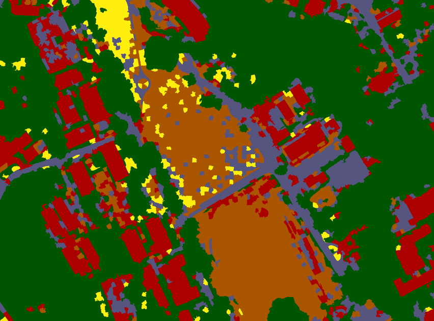
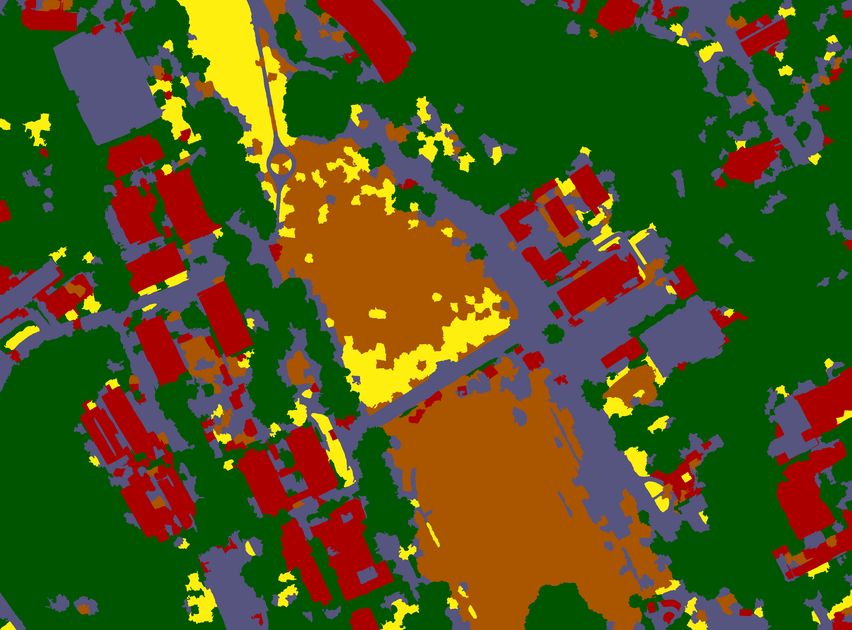
One of the replays, whole scene. Watch the field, the earthworks and the roads settle.
5.6Generalisation
Even a good map has isolated objects labelled differently from everything around them. The sieve removes connected patches of one class smaller than a pixel threshold and hands them to the surrounding class. This sets a minimum mapping unit without blurring real boundaries, because it only ever moves whole small patches.
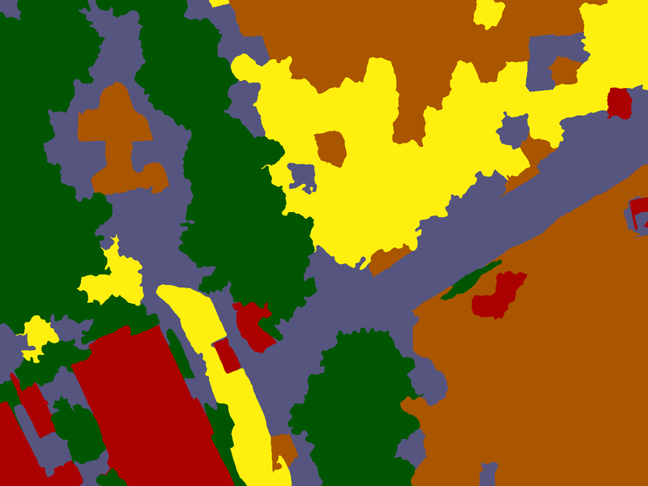
| Sieve (px) | Area at 10 cm (m²) | Map pixels changed | Overall accuracy |
|---|
Segments at 10 cm average about m² (around pixels), so a sieve below roughly 1,400 pixels changes nothing: every patch is already bigger. The sample session used a sieve between 1,500 and 2,000 px. It tidied 0.6% of the map and cost one reference point. Set the sieve for how the map will be used, not to raise the score.
5.7Accuracy assessment
A map is only as useful as your knowledge of how wrong it is. Lite Land follows standard remote-sensing practice (Congalton and Green):
- An independent sample. Points are scattered by simple random sampling over the whole image, not by the map's own classes, so the check does not depend on the model it checks. Training objects are kept out.
- Blind labelling. You label each point on the raw image, with the classification hidden, so the model's answer cannot sway you.
- A confusion matrix. Rows are what the map says; columns are what the reference says. The diagonal holds agreements.
| Measure | Question it answers | From the matrix |
|---|---|---|
| Overall accuracy | What share of all points is right? | Diagonal total ÷ all points |
| User's accuracy | If the map says Grass, how often is it really Grass? (reliability for a map user) | Diagonal ÷ row total |
| Producer's accuracy | Of the real Grass, how much did the map find? (completeness for the map maker) | Diagonal ÷ column total |
Kappa is left out on purpose; current guidance favours these three measures. The worked matrix for the sample is in Part C, 10.4.
Equal points per class, or random? A simple random sample puts points where the classes are, so overall accuracy estimates the whole map. A sample with the same number of points per class, like the sample session's 20 each, gives every class enough points for a fair per-class score, but over-weights rare classes in overall accuracy. In the sample, Trees cover of the map but hold 20% of the points. Report overall accuracy from an equal-per-class sample as a per-class summary, not as the map-wide figure.
Reference data is not ground truth. Points you label by eye from the orthomosaic are high-confidence reference data. Only points checked on the ground are ground truth. Lite Land's report records which source each point came from and says so in its footnote.